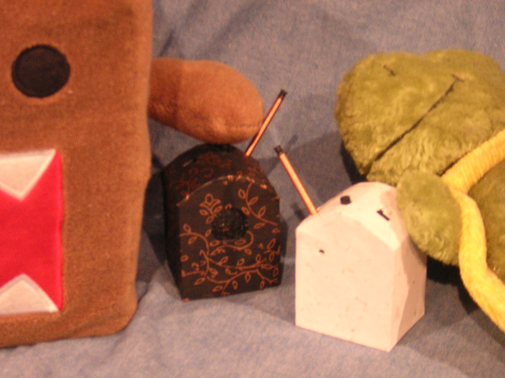

people doing strange things with electricity
The twelve thousandth dorkbot-nyc meeting took place on Wednesday, February 2nd, 2005, 7pm at
Location One in SoHo.
It Featured the lovely and talented:
Jason Freeman: Glimmer
In Glimmer (2004), which was recently premiered by the American Composers Orchestra, the concert-hall audience members become musical collaborators who do not just listen to the performance but actively shape it. Each audience member is given a battery-operated light stick which he or she turns on and off over the course of the piece. Computer software analyzes live video of the audience and sends instructions to each musician via multi-colored lights mounted on each players stand. Jason Freeman is a composer who uses technology to rethink the relationships between composers, performers, and listeners.
http://www.jasonfreeman.netAaron Yassin: In the digital age photographs have become malleable bits of information that can be manipulated and adjusted with the click of a mouse. In the series Infinity Diagrams Yassin uses digital compositing to create a new hybrid form of image making. By repeating photographs of architectural subjects dozens, or even hundreds of times, mesmerizing patterned images are made. By using new imaging Yassin adds meaning to familiar subjects as he explores the relationship between information and image. Part of his presentation will include showing some of the final inkjet prints.
http://www.aaronyassin.com Neg-Fi: Uncontrollable Feedback Devices and Tape-Based Noise
Neg-Fi is Evelyne and Ryan, a tape-based noise rock band that prides itself on its typically homemade packaging (childrens book cutouts, balsa wood, and foamcore are favorite materials). They are also the makers of "Wireless UFDs" (uncontrollable feedback devices), whose biggest selling point is the fact that they are wireLESS. They use the UFDs as part of their music, in addition to occasionally making them available for sale.
Some images from the meeting are here.